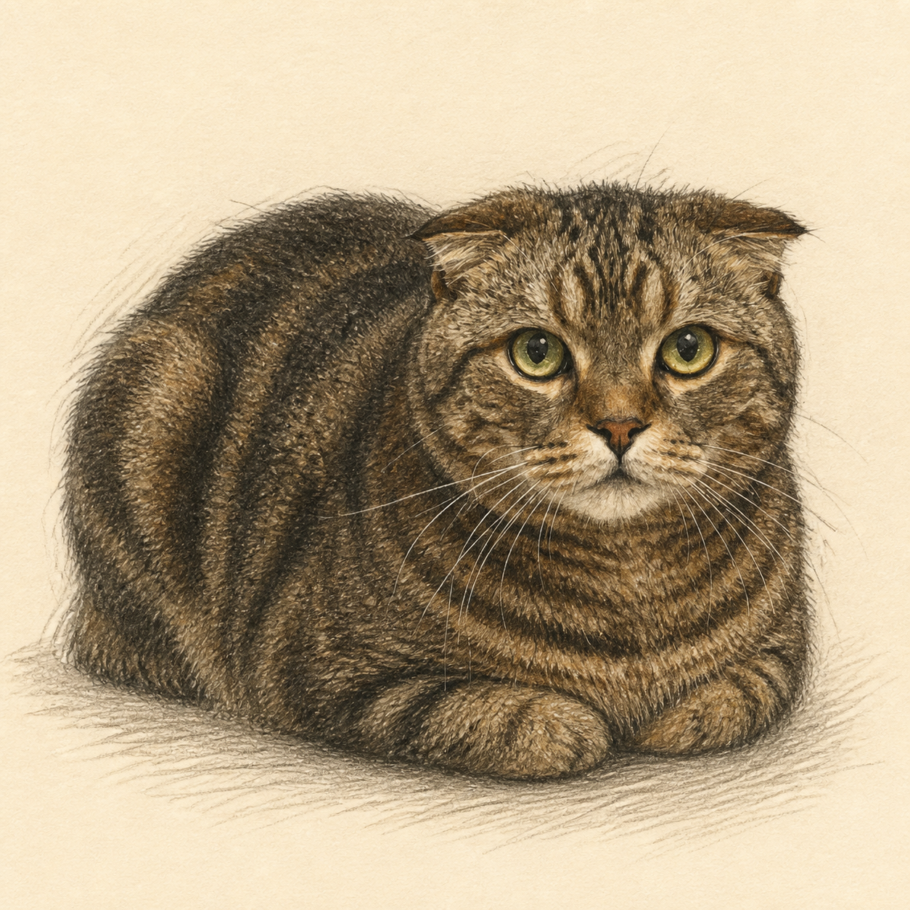
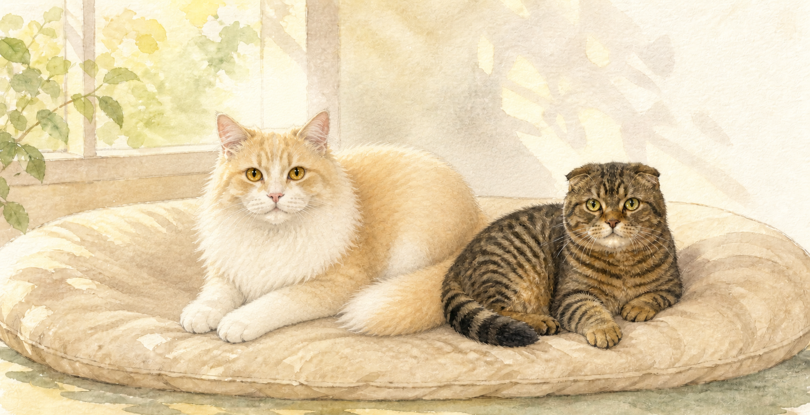
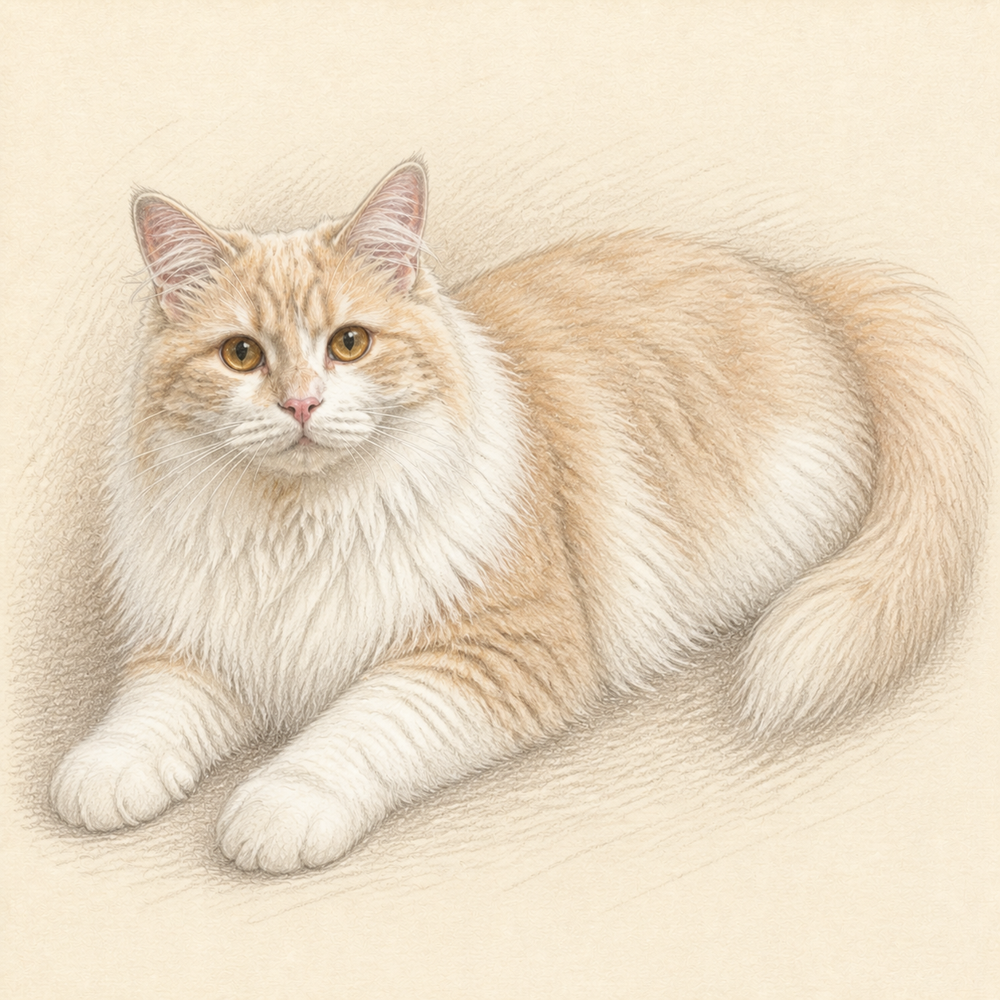
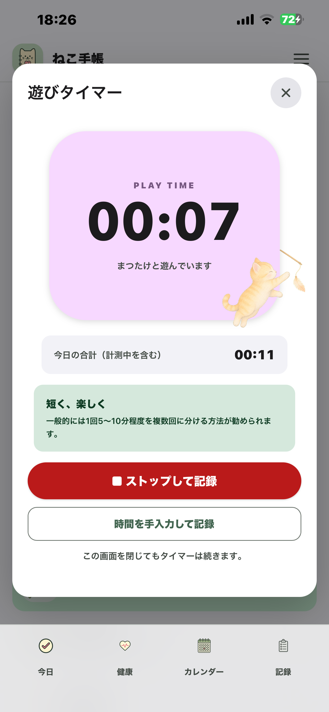
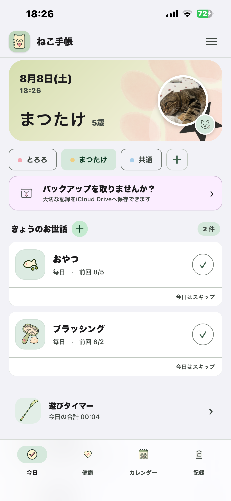
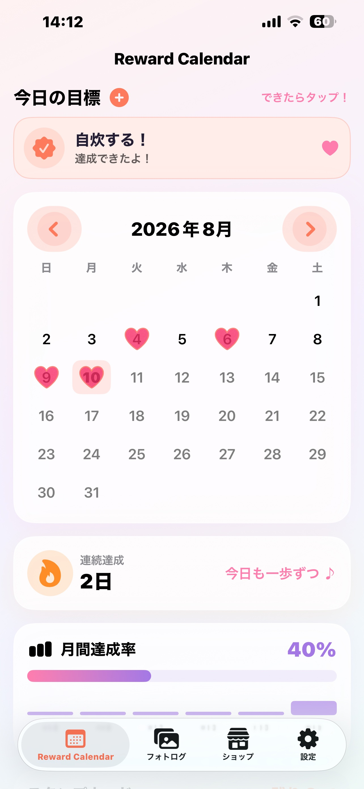
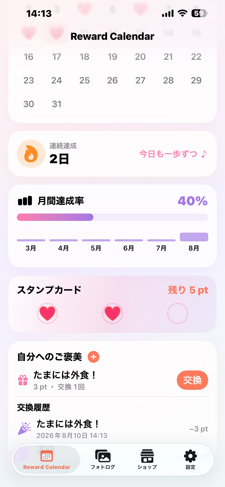
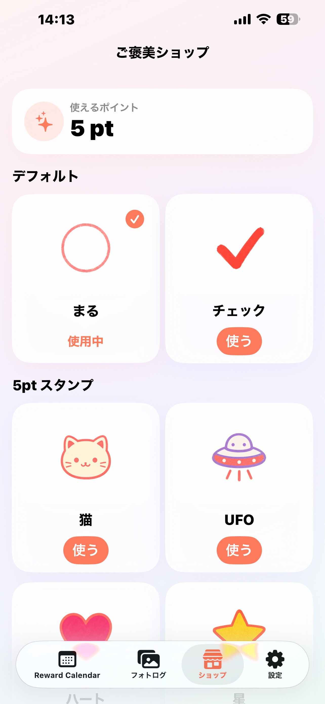
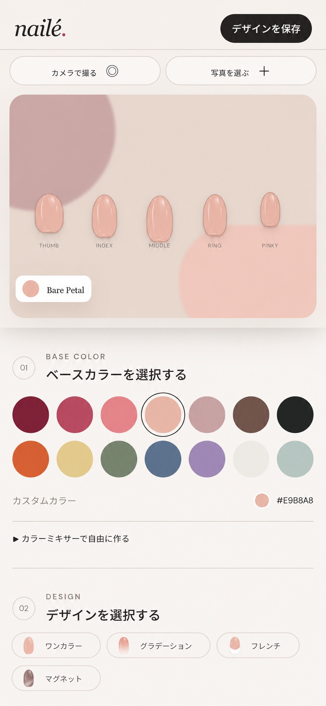
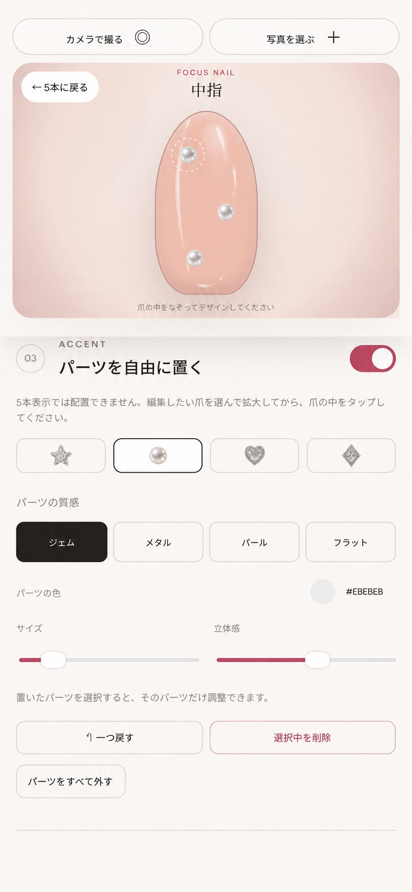

まつたけ
毎朝4時ごろに起こしにくる、優しい性格。

PROFILE
基幹業務システムのITエンジニアとして約5年、開発や運用に携わりました。その後は人事・採用へ移り、スタートアップから大手コンサルティングファームまで、幅広い企業の採用を支援してきました。
現在はProgateでタレントコンシェルジュとして、学習者の方々をサポートしています。個人でも、日々の生活で「こういうものが欲しい」と思ったことをきっかけに、iPhoneアプリやWebアプリをつくっています。
JOURNEY
北海道
CATS

毎朝4時ごろに起こしにくる、優しい性格。

作業中にキーボードの上に座りに来るくらい甘えん坊。
WORKS


二匹との暮らしをきっかけにつくった、猫ごとのお世話と健康をまとめて残せる記録アプリです。



小さな目標の達成をスタンプで記録し、ポイントと自分へのご褒美につなげる習慣化アプリです。


色・質感・アート・パーツを組み合わせ、手元写真でも仕上がりを試せるネイルデザインアプリです。
主要な操作をブラウザ上で試せるデモです。一部の保存・端末連携機能は利用できません。